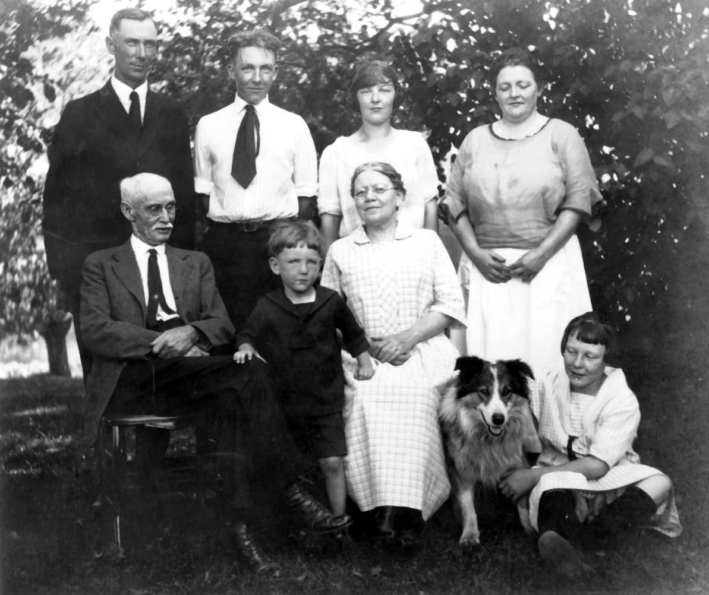

CAMPBELL COUSINS CORRESPONDENCE

Dear
Cousins:
I received a copy of
the "Campbell Cousins Correspondence, from Cousin Will Selph and was asked to write a
letter.
I can say we all enjoyed reading the
letters from the various Cousins scattered as they are in the
different parts of the United States,‑ and think it a fine idea of
keeping in touch with each other.
I am still living on the old farm where I
was born,‑ known to all the own Cousins as Uncle Allen’s and Aunt
Mary Ann’s, where most of
you can remember having some very good times in years gone by.
Father is
a retired farmer and lives in Osceola where he and Mother
[Sam's mother, Mary
BABCOCK Seely, died at his birth. Mary Louise HAZLETT Seely was
actually Sam's step-mother-wbt] are enjoying their
old age.
I have four children,‑ Dora, aged nineteen
years, attending State Normal School at Mansfield;‑ Rex, aged
seventeen, Beryl, twelve years, and Allen Jud, aged four years,‑
the last three being at home.
We attended the annual Cousins' Dinner at
Cousin L. B. Shaw's on
September 26th. Had a fine time as well as a very good dinner.
It. has not been a very prosperous year for
the farmers;‑ it has been so very dry, but crops are fairly good in
the Cowanesque Valley compared with other places.
We are looking forward to No. 3 Report as
we will hear from some of the second Cousins. We hope this
Correspondence Course may be a great success.
Very truly yours,
- Report No. 2 - Page
29 -
(Mary Ann Campbell
Family)